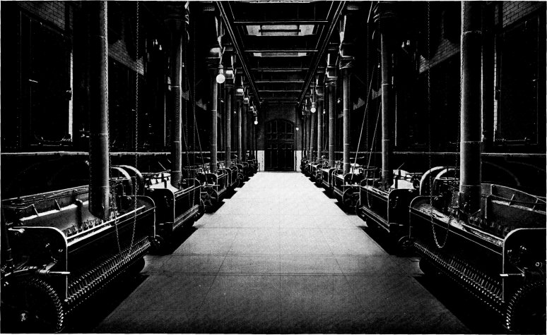

Two Units of 8128 Horse Power of Babcock & Wilcox Boilers
and Superheaters
at the Fisk Street Station of the Commonwealth Edison
Co., Chicago, Ill.,
50,400 Horse Power being Installed in this Station.
The Commonwealth Edison Co. Operates in its Various Stations a Total of
86,000 Horse Power
of Babcock & Wilcox Boilers, all Fitted with Babcock
& Wilcox Superheaters
and Equipped with Babcock & Wilcox Chain Grate Stokers